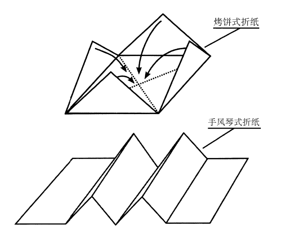

10 日本折纸艺术
数学概念：几何学、拓扑学

日本折纸艺术是美国孩子的主要消遣活动，我们很多人都见过纸鹤、纸杯和充气气球，但很少有人知道，折纸和数学之间存在着紧密的关联。
折纸最吸引人的一个特点在于，它可以超越传统的数学，尤其是几何学。只需要一张折纸，我们就可以三等分一个角（分成三个相等的分角），而用传统几何学中的圆规和直尺，这是根本不可能完成的。我们还可以用折纸来2倍一个立方体，这也是标准几何学无法完成的（2倍立方体是古埃及人和古希腊人发现的一个问题。要2倍一个立方体，首先要有一个给定边长和体积的立方体，求作一个新的立方体，其体积是初始立方体的两倍，这个过程根本无法完成，因为2倍立方体边长的立方根是2，这个长度是无法用圆规和直尺作出的）。
事实上，在对折纸艺术的数学研究中，也产生了一些几何公理———与两千多年前的古希腊大数学家欧几里得提出的原理和定义类似的一套公理，被统称为折纸几何公理，指出了折纸过程中的全部基本操作。折纸数学也衍生了川崎定理，这一定理指出，围绕一个点的所有角的其他角的和等于180°。
折纸数学不仅差一点成为一个独立的数学分支，有着自己的证明和公理，折纸所使用的材料通常也具有数学性。有人用三角形和五角形的折纸材料折出三维的形状，有人折出柏拉图多面体———由规则的多面体（由平面和直边组成的三维形状）组成的五种基本形状，也有的折纸艺术家折出双曲抛物线———马鞍形———就像一个介于四方形和一只蝴蝶之间的十字架，还有的用折纸来证明勾股定理。
从某种意义上说，折纸和数学似乎有着相同的概念元素，用自己的双手来做出一个形状，从而更好地掌握数学概念，这样的效果是最好的。丢掉铅笔和绘图计算器吧，花点时间在折纸中发现数学！
折纸节日树
每年，美国自然历史博物馆会与美国折纸协会合作推出折纸节日树，这棵树上共有近800件装饰物。2014年，折纸节日树是以《博物馆奇妙夜》这部电影为主题，所以当年的装饰物包括西奥多·罗斯福、一只霸王龙和一座来自复活节岛的石像。